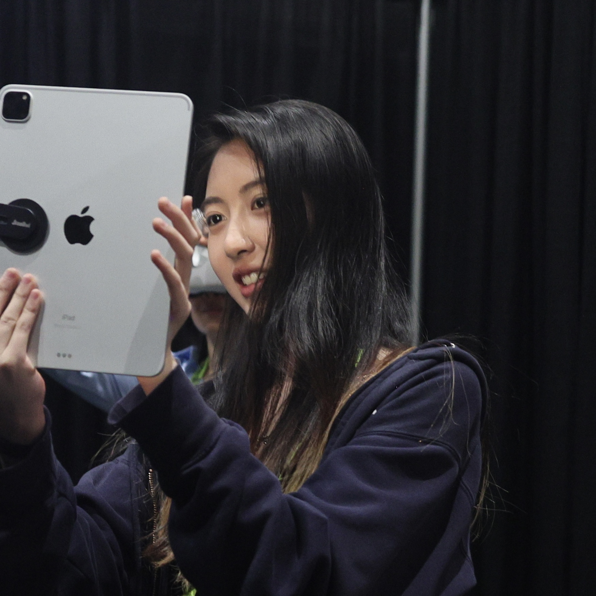

About Me

I am a PhD candidate at NYU Courant proudly supervised by prof. Ken Perlin. I am passionate about prototyping the future of interaction and collaboration through mixed reality, computer graphics, multimodal interface design, and AI. With experience across art, technology, and perception studies, I excel in interdisciplinary collaboration and enjoy turning ideas into impactful, actionable research. My projects have led to demos and publications at premier conferences, including SIGGRAPH, UIST, VRST, TEI, and DIS.